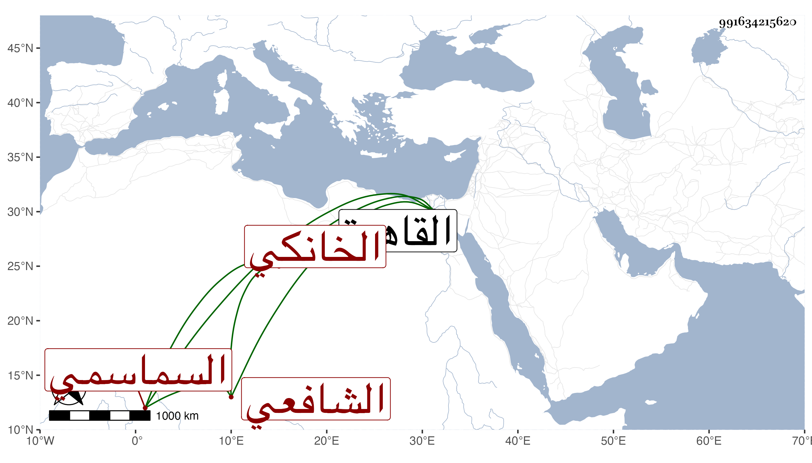

0902Sakhawi.DawLamic.ITO20230111-ara1.EIS1600.991634215620
Biography ID: 991634215620
162
أبو بكر بن علي السماسمي الخانكي الشافعي نزيل القاسمية منها ويعرف بابن شتات بفتحتين . ممن أخذ عن الشمسين الونائي والبامي وأبي القسم النويري في الفقه والعربية وقطن القاهرة فاشتغل بها على جماعة وتلا للسبع على الزين جعفر وحج وأخذ جميع ما معه وهو راجع وأقرأ في الفقه والعربية أخذ عنه عبد العظيم ابن عبد العظيم والشهاب الحرفوش ومات تقريبا سنة ثمانين . وكان فاضلا كريما متجملا صالحا يتكسب بالشهادة والنسخ وغيرها . ممن حج وجاور .
